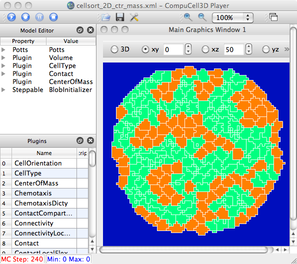
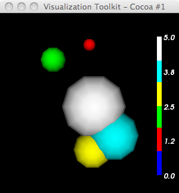
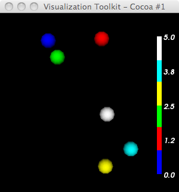

We introduce a new visualization technique - cell glyphs. Now the cc3D Visualization menu contains the following techniques (toggles):
Cells | Cell Borders | Cell Glyphs | Concentration Limits
Note: cell glyphs require that a CenterOfMass plugin be defined. How do we check for this being defined?
from MVCDrawModel2D.py: self.currentDrawingParameters.bsd.sim.getCC3DModuleData("Plugin","CenterOfMass") not None

heiland@dhcp-cs-244-142:~/dev/vtk-stuff$ cat cell-colors-glyphs.py
from vtk import *
import os,string,sys,math
try:
VTK_DATA = os.environ['VTK_DATA']
except KeyError:
VTK_DATA = '../../../vtkdata/'
argc = len(sys.argv)
print 'argc=',argc
#if argc < 2:
# print 'Usage: ',sys.argv[0],' <ntps>'
# raise ValueError, 'Too few input args'
idx=1
#npts = string.atoi(sys.argv[idx])
npts = 6 # to match the hard-coded LUT below
idx=idx+1
print 'npts = ',npts
vmath = vtkMath()
#vmath.RandomSeed(1234)
# I can't stand the default red->blue; make a blue->red LUT
lut = vtkLookupTable()
#lut.SetHueRange(0.667,0.0) # make a blue->red LUT
#lut.SetTableRange(double min,double max)
#lut.SetValueRange(double min,double max)
# actually - construct custom LUT (e.g. based on user's cell type colors)
lut.SetNumberOfTableValues(npts)
lut.SetNumberOfColors(npts)
lut.SetTableValue(0, 0,0,1,1) # SetTableValue (vtkIdType indx, double r, double g, double b, double a=1.0)
lut.SetTableValue(1, 1,0,0,1)
lut.SetTableValue(2, 0,1,0,1)
lut.SetTableValue(3, 1,1,0,1)
lut.SetTableValue(4, 0,1,1,1)
lut.SetTableValue(5, 1,1,1,1)
lut.Build()
pts = vtkPoints()
verts = vtkCellArray()
#center = (0,0,0)
#pts.InsertPoint(0,0,0,0)
scalars = vtkFloatArray()
scalars.SetNumberOfValues(npts)
scalars.SetName("cellType")
R = 1
dmin=1.e10
dmax= -dmin
for idx in range(0,npts):
x = vmath.Random(-R,R)
y = vmath.Random(-R,R)
# z = vmath.Random(-R,R)
z = 0
print idx,') x,y,z=',x,y,z
scalars.SetValue(idx,idx)
pts.InsertPoint(idx,x,y,z)
verts.InsertNextCell( 1 )
verts.InsertCellPoint(idx)
cellPD = vtkPolyData()
cellPD.SetPoints(pts)
cellPD.SetVerts(verts)
cellPD.Update()
#cellPD.GetCellData().SetScalars(scalars)
cellPD.GetPointData().SetScalars(scalars)
balls = vtkSphereSource()
balls.SetRadius(.1)
balls.SetPhiResolution(10)
balls.SetThetaResolution(10)
glyphPoints = vtkGlyph3D()
glyphPoints.SetInput(cellPD)
glyphPoints.SetSource(balls.GetOutput())
glyphPoints.SetScaleModeToDataScalingOff() # use this to NOT scale the glyphs
mapper = vtkPolyDataMapper()
mapper.SetInput(glyphPoints.GetOutput())
#mapper.SetScalarModeToUseCellFieldData()
mapper.ScalarVisibilityOn()
#mapper.SetColorModeToMapScalars()
#mapper.SelectColorArray("cellType")
mapper.SetScalarRange(0,npts-1)
mapper.SetLookupTable(lut)
mapper.Update()
bds = cellPD.GetBounds()
print 'bds = ',bds
cellsActor = vtkActor()
cellsActor.SetMapper(mapper)
# Create rendering stuff
ren1 = vtkRenderer()
renWin = vtkRenderWindow()
renWin.AddRenderer(ren1)
iren = vtkRenderWindowInteractor()
iren.SetRenderWindow(renWin)
#------------------------
scalarBar = vtkScalarBarActor()
scalarBar.SetLookupTable(lut)
#scalarBar.SetTitle("Stress")
scalarBar.GetPositionCoordinate().SetCoordinateSystemToNormalizedViewport()
#scalarBar.GetPositionCoordinate().SetValue(0.8,0.05)
scalarBar.SetOrientationToVertical()
scalarBar.SetWidth(0.1)
scalarBar.SetHeight(0.9)
scalarBar.SetPosition(0.88,0.1)
#scalarBar.SetLabelFormat("%-#6.3f")
scalarBar.SetLabelFormat("%-#3.1f")
scalarBar.GetLabelTextProperty().SetColor(1,1,1)
#scalarBar.GetTitleTextProperty().SetColor(1,0,0)
ren1.AddActor2D(scalarBar)
#------------------------
ren1.AddActor(cellsActor)
#ren.SetBackground(1,1,1)
renWin.SetSize(300,300)
#ren.GetActiveCamera().Zoom(1.4)
renWin.Render()
w2i = vtkWindowToImageFilter()
w2i.SetInput(renWin)
jpgw = vtkJPEGWriter()
jpgw.SetInput(w2i.GetOutput())
jpgw.SetFileName("foobar.jpg")
#jpgw.Write()
iren.Start()

Left: scaled glyphs according to the associated scalar value. And since the first point has a scalar=0, it disappears. Right: no scaling.